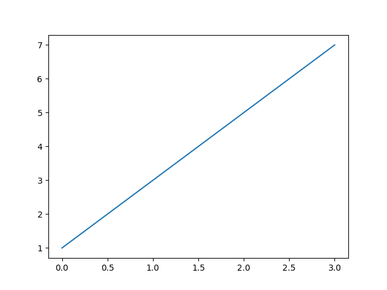
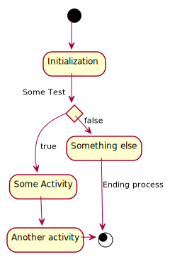
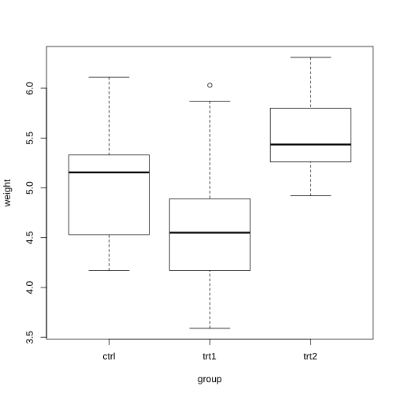

Blogging in Org Mode
This is a private post outlying how to create posts with Nikola.
How to insert pictures in Python
Prova a scrivere un poco in verbatim.
import matplotlib.pyplot as plt
plt.plot([1,3,5,7])
plt.savefig("../images/test_plot.png")
return("../images/test_plot.png")

Insert pictures directly via html

Like this you can directly center etc using html. Not sure if it works on nikola though.
pictures on R

For latex integration
Check at one of the posts with contrasts. There are the options in the comments.